Showing all 21 articles
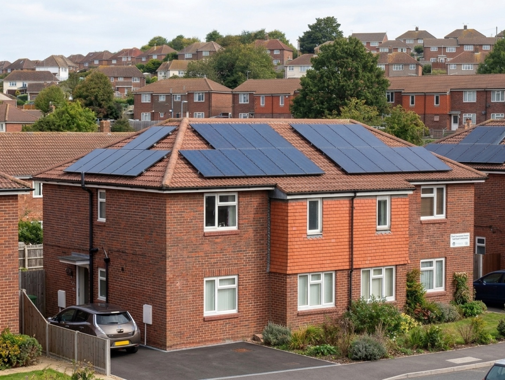
Gryd's council housing solar rankings 2026, which regions lead and which fall behind
Gryd has launched the Gryd Council Housing Solar Index, an industry benchmark of council solar deployment across the UK.
Danielle Todd13 July 2026
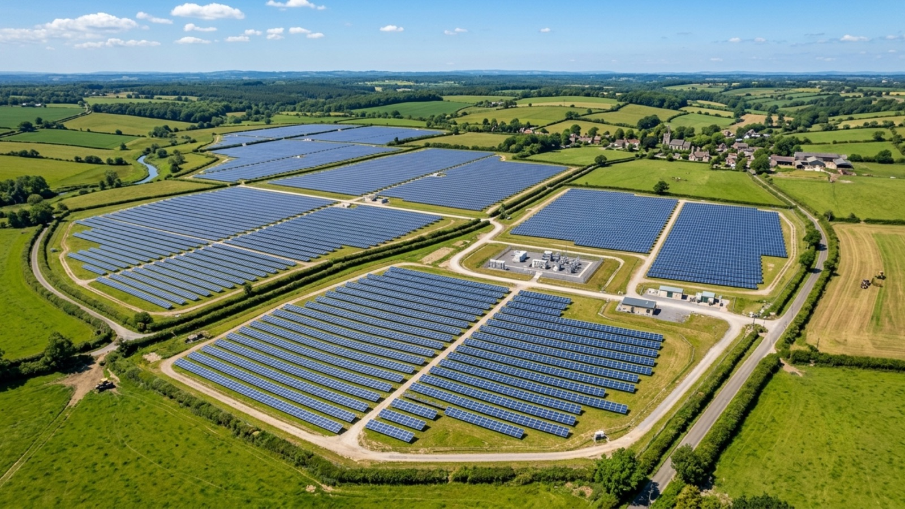
Solar has never been more popular, so why do solar farms keep getting rejected?
Solar enjoys 86% public support in the UK, yet the proposed Lime Down farm in Wiltshire drew nearly 5,000 objections.
Scott Whiteside25 June 2026
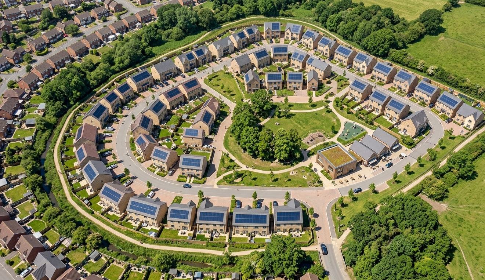
The complete guide to funded solar and storage for new build homes
Every route open to UK house builders, from zero capex subscriptions and private wire microgrids to supplier tariff partnerships and self funding.
Scott Whiteside5 May 2026
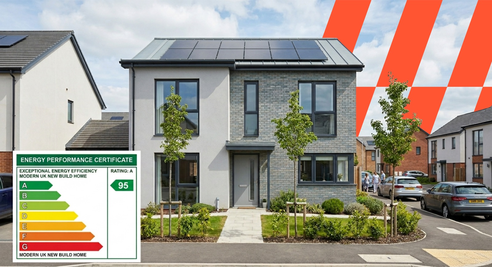
SAP scores versus real energy use, why developers are missing half the picture
SAP scores do not account for total energy use in new homes. Why UK housebuilders must consider real demand, and how solar can support it.
Hugo Radford22 April 2026

The Future Homes Standard, how to differentiate when everyone must comply
From 2028 every new home in England must include on site generation and low carbon heating. The question shifts from whether to how.
Danielle Todd25 March 2026

Future Homes Standard, how to calculate how much solar you need
The confirmed sizing formula from Approved Document L 2026, and why designing beyond the minimum is worth doing.
Scott Whiteside24 March 2026
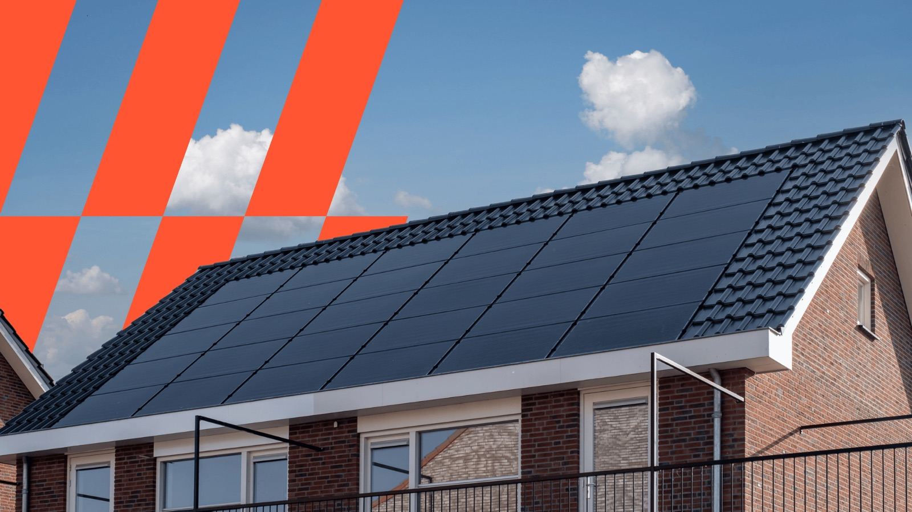
The Future Homes Standard is published, here is the confirmed implementation timeline
In force on 24 March 2027 with a 12 month transition to 24 March 2028. The HEM and SAP crossover, and what to do now.
Scott Whiteside24 March 2026

Future Homes Standard explained, and a closer look at the solar mandate
How solar panels, heat pumps and battery storage will shape new build homes, and how to prepare for the 2027 requirements.
Scott Whiteside19 March 2026
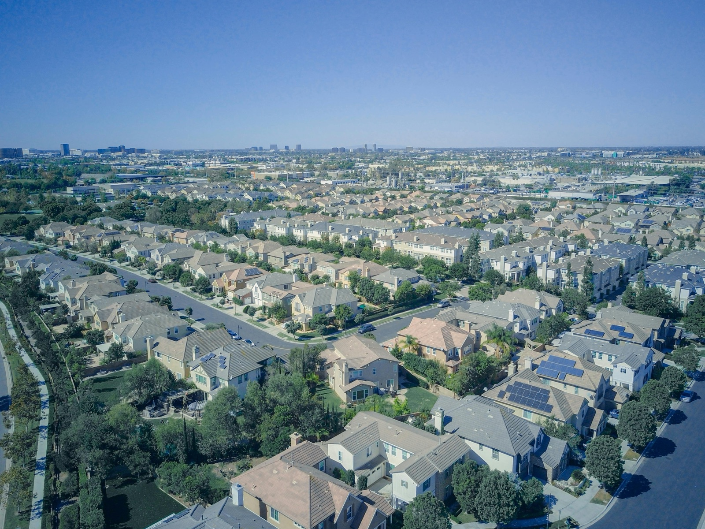
Why solar matters for the future of affordable housing
For local authorities and housing associations, expectations are rising just as build costs, regulation and financing requirements tighten.
Danielle Todd17 February 2026
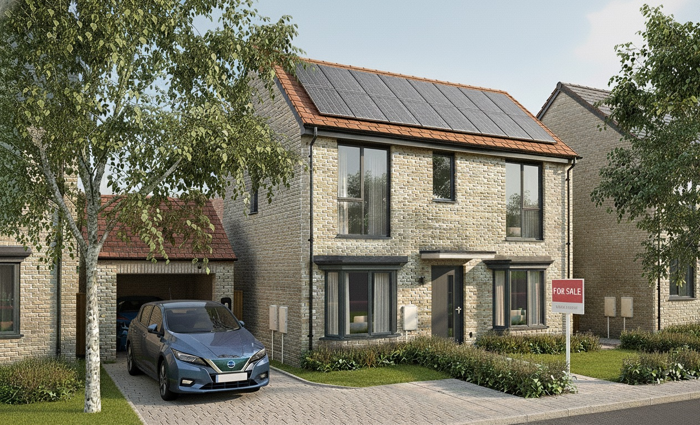
Breaking the green premium, why it is holding back affordable, competitive homes
Efficiency and renewable features are becoming must haves. They cut bills and lift long term value, but the price tag still sits with the buyer.
Danielle Todd6 November 2025
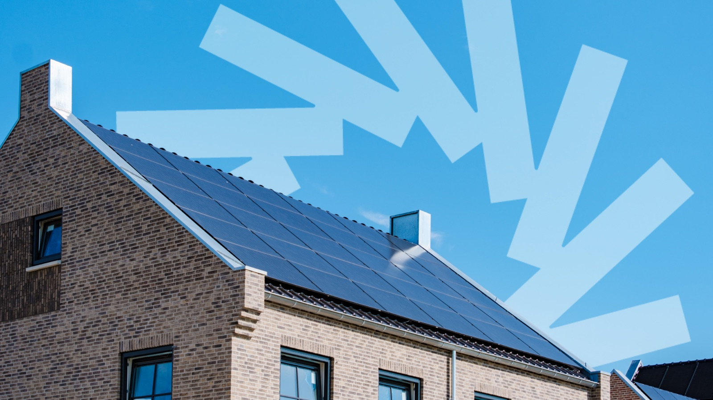
Rising energy demand, why new build homes need bigger solar systems
EVs, heat pumps and connected devices are driving record demand, yet most new builds still get systems that barely make a dent.
Hugo Radford19 September 2025
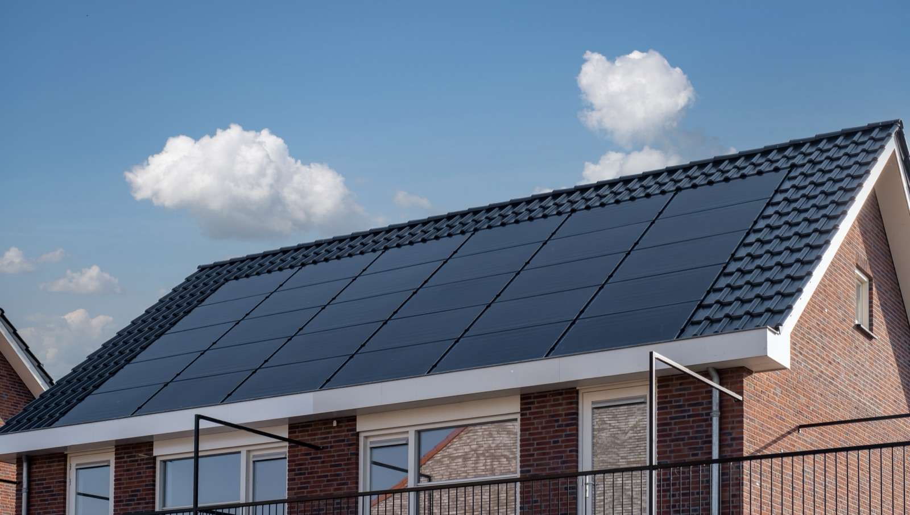
Best roof types for solar panels, a guide for UK housebuilders
With rooftop solar about to become mandatory, solar ready roofs are a must. Roof types, design tips and system choices.
Scott Whiteside6 August 2025
Integrating solar and heat pumps in new builds, a guide for housebuilders
As heat pumps replace gas, solar is the natural partner. How pairing them cuts running costs and manages SAP performance.
Scott Whiteside30 July 2025
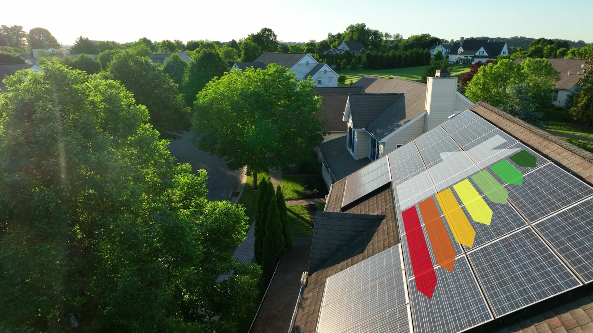
How solar helps housebuilders meet EPC targets
Buyers increasingly want homes with lower running costs and greater energy independence, and lenders are following them.
Danielle Todd23 July 2025

What is Gryd? The solar subscription changing how new homes are powered
How the Gryd subscription model makes clean energy simple and builds it into new homes, with no upfront cost and no added complexity.
Scott Whiteside16 July 2025
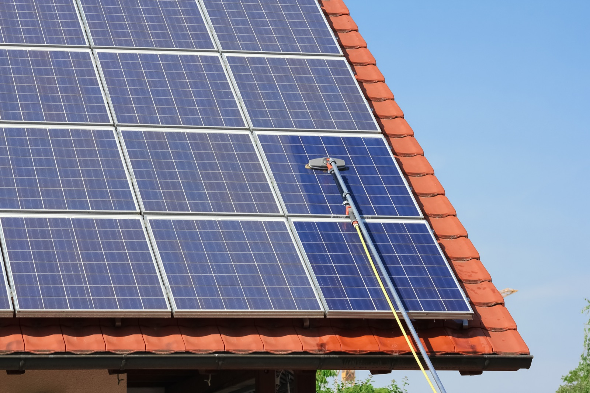
Solar panel maintenance and replacement costs, what builders and buyers should know
UK maintenance and replacement costs broken down, with leasing set against ownership over the life of a system.
Danielle Todd9 July 2025
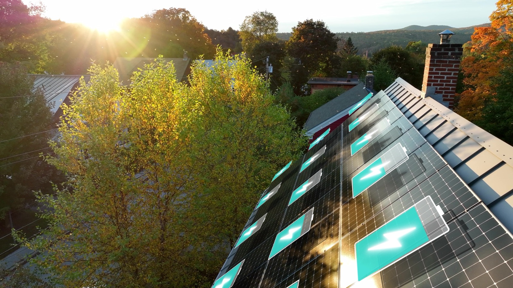
Do you need a solar battery? Benefits for new build homes
Rooftop solar is becoming mandatory, so what comes next? How home batteries unlock bigger savings and long term resilience.
Hugo Radford2 July 2025
How onsite battery storage can solve grid constraints and improve project viability
How on site solar and batteries cut connection costs and meet low carbon planning goals, without waiting on grid upgrades.
Scott Whiteside25 June 2025

Solar providers compared, Gryd versus Zero Bills versus SNRG
Costs, ownership models and resale impact set side by side, to help you choose the right fit for your project and your buyers.
Scott Whiteside18 June 2025

A simple guide to solar leases, how they work and why they are growing
How the modern solar lease futureproofs homes, cuts carbon and tackles fuel poverty, without upfront costs or maintenance worries.
Danielle Todd11 June 2025

Mandatory solar panels in new homes, what housebuilders need to know
With the Future Homes Standard on the horizon, how fully funded solar keeps you compliant and viable without the upfront cost.
Scott Whiteside4 June 2025
Nothing published in this category yet.
Read enough. Now put it against your own site.
A site assessment gives you system sizing per plot, the effect on EPC, and what the homeowner pays, before you commit to anything.
Request a site assessment